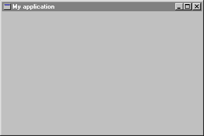

Step 1: Creating an application
All Windows programs have a window called main window that appears when the user starts the program. In WEL, this window is owned by the application which is responsible for creating and displaying the main window, processing Windows messages and terminating the application.
Every WEL application must define its own descendant of WEL_APPLICATION in order to define the deferred function main_window as follows:
class
APPLICATION
inherit
WEL_APPLICATION
creation
make
feature
main_window: WEL_FRAME_WINDOW is
-- Create the application's main window.
once
!! Result.make_top ("My application")
end
end-- class APPLICATION
This class is the minimal WEL application, if you run it you will get an empty frame window that can be moved, resized, maximized, minimized and closed. Figure 2 shows the appearance of the application.
Figure 2
